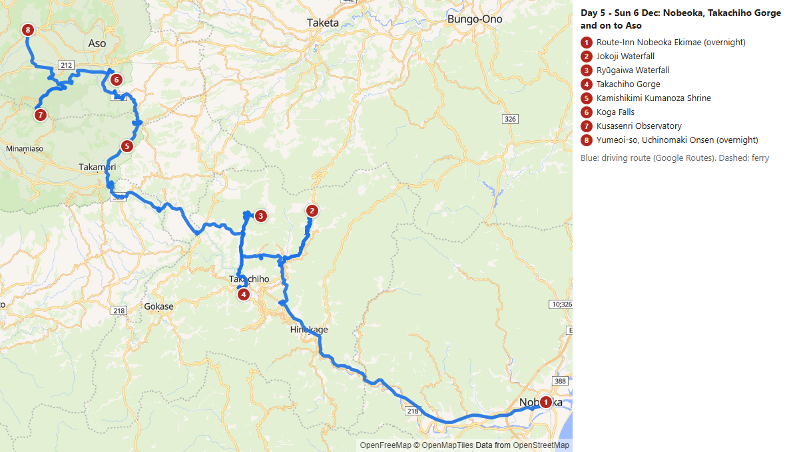
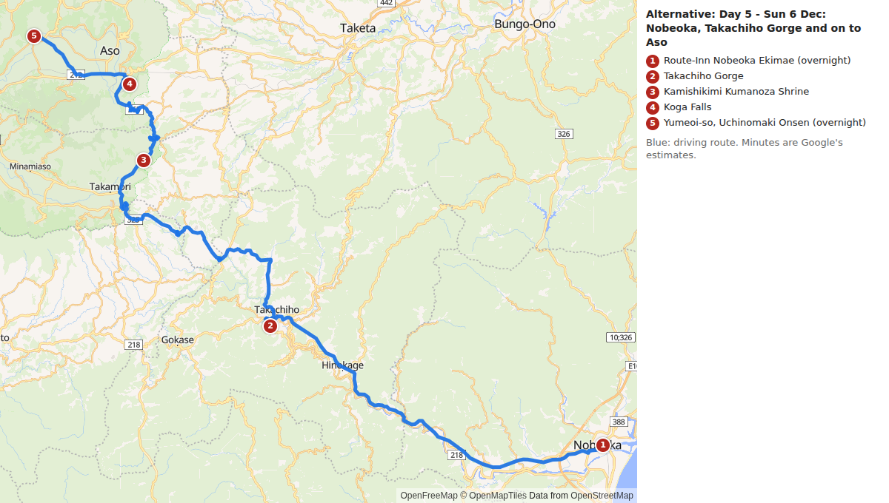
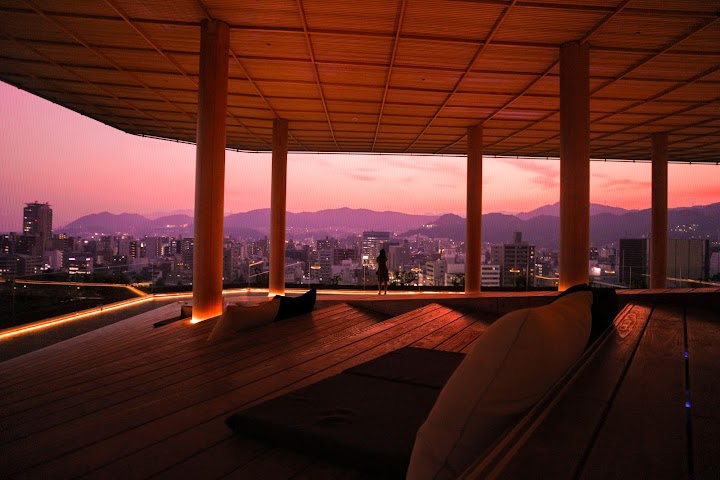
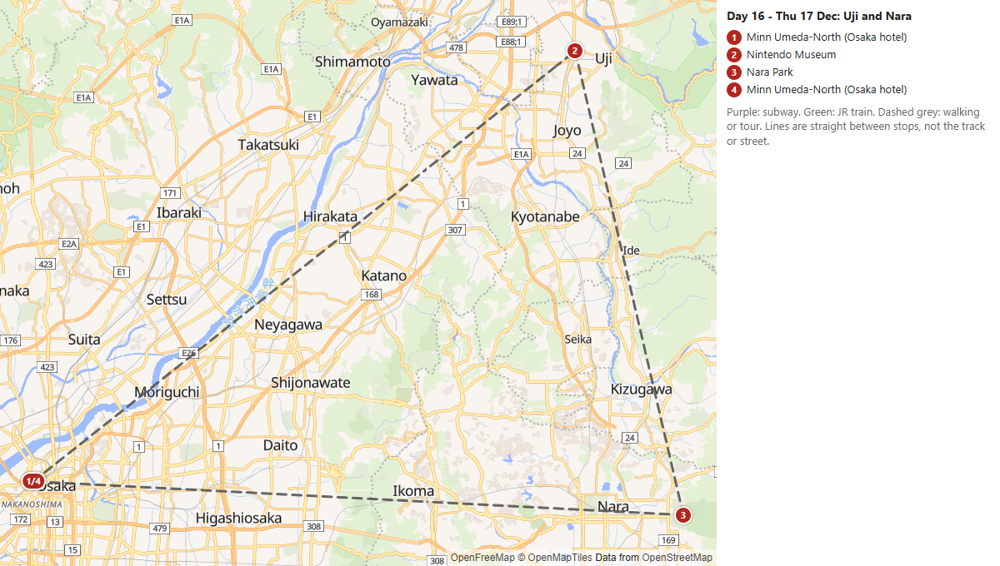

Fixed dates
Outbound flight, Tue 1 - Wed 2 Dec 2026 (Vietnam Airlines, 3 passengers, 1st checked bag up to 23 kg each):
- VN 656: Singapore Changi (SIN) T3 departs 20:45 Tue 1 Dec -> Ho Chi Minh City (SGN) T2, arrives 22:00
- VN 350: Ho Chi Minh City (SGN) T2 departs 00:45 Wed 2 Dec -> Fukuoka (FUK) Terminal I, arrives 07:35 (2 h 45 min layover; all times local)
- Day 1 assumes about 2 hours from landing to leaving the airport in the rental car (immigration, baggage, pickup), so the first stop is at about 10:10.
Return flight, Sat 26 Dec 2026 (Scoot TR 893, 3 passengers, 25 kg checked baggage each):
- Sapporo New Chitose (CTS), International Terminal: departs 18:40 -> Taipei Taoyuan (TPE) T1, arrives 22:20 (1 h layover)
- Taipei (TPE) T1 departs 23:20 -> Singapore Changi (SIN) T1, arrives 04:00 on Sun 27 Dec (all times local)
- The booking states a check-in deadline of 60 minutes before departure (17:40 at CTS). Plan to be at New Chitose by about 15:30-16:00.
Tickets and bookings (full checklist: TODO_before_the_trip.md)
| Book by | Travel date | What | How to book |
|---|---|---|---|
| NOW | Mon 14 Dec | Universal Studios Japan | BOOK NOW: dated Studio Pass plus Super Nintendo World timed entry |
| NOW (lottery) | Thu 17 Dec | Nintendo Museum | BOOK NOW: reservation only (lottery); fallback is Nara only |
| NOW | 22-25 Dec (option D) | Sapporo Teine ski lessons | BOOK NOW: contact the Olympia ski school (school@sapporo-teine.com, +81-11-685-7000). English first-timer group lesson about 21,000 yen per person full day (min 2 people, age 7+); full payment in advance; junior classes registration opened 9 Oct (some by lottery) |
| Wed 11 Nov | Fri 11 Dec | Shinkansen Hakata-Hiroshima-Shin-Osaka | Reserve about Wed 11 Nov (1 month before): Nozomi 6 at 07:15, Sakura 762 at 17:33 |
| Wed 18 Nov | Fri 18 Dec | Shinkansen Osaka-Shin-Fuji-Tokyo | Reserve about Wed 18 Nov: Nozomi 236 + Kodama 804, Kodama 822 |
| Fri 20 Nov | Sun 20 Dec | Shinkansen Ueno-Hakodate | Reserve about Fri 20 Nov: Kagayaki 505 + Hayabusa 5 (all reserved) |
| Sat 21 Nov | Mon 21 Dec | Limited Express Hokuto 15 (Hakodate to Sapporo, 15:01) | Reserve about Sat 21 Nov (JR Hokkaido, all reserved) |
| Sun 22 Nov, 09:00 JST | Sun 6 Dec | Takachiho Gorge rowing boat | BOOK on Sun 22 Nov 09:00 JST (2 weeks before; confirm). About 4,100 yen per boat of up to 3 people |
| 1 month before the day you pick (22 to 25 Nov) | 22-25 Dec (option C) | Lilac 5 and Lilac 32 (Biei day trip) | Reserve one month before the day you pick; times were checked for Fri 25 Dec |
| Before 3 Dec (no rush, but boats fill up) | Thu 3 Dec | Yanagawa canal cruise | Book online (recommended): shared boat 2,200 yen adult, boats 09:30-15:00 |
| Optional: on the day | Fri 4 Dec | Kumamoto Castle | Gate ticket 800 yen adult; advance web ticket optional |
| Before 20 Dec (refundable to 2 days before) | 22-25 Dec (option B) | Noboribetsu, Lake Toya and Niseko guided day tour | Book online (your Tripadvisor link); from about US$59 per person on Viator; refundable up to 2 days before |
| Online, before the day you ski | 22-25 Dec (option D) | Sapporo Teine ski day (lift tickets, rental) | Buy lift tickets online (about 1,000 yen cheaper); 2026-27 prices not yet published (2025-26: adult 8,400, child 5,200 yen online). Group lesson with rental must be booked 2 days ahead |
| Before the day you pick | 22-25 Dec (option C alternative) | Asahiyama Zoo and Blue Pond guided day tour | Book online (your Tripadvisor link); from about US$106 per person on Viator; zoo admission and lunch included; check refund terms and English commentary |
| Not needed | Sat 26 Dec | JR Rapid Airport to New Chitose | No reservation needed |
Hotels and food
- Tentative hotels on Booking.com: options for every night for 2 adults and a child of 11, onsen and laundry noted, with area search links.
- Where to eat: yakitori, Indian and fast food near each day's lunch stop and hotel.
- Preparation checklist.
Day 1 - Wed 2 Dec: Land 07:35, then Dazaifu, Itoshima and Karatsu


Start: Fukuoka Airport - total driving 4.0 h
Overnight (tentative): Mercure Saga Karatsu Resort (1 night, S$185): public bath, sauna, free parking
Drive character: 20% of the distance on expressway-speed roads; terrain: plains, urban, hills, coastal, mountain

- 10:08
Photo: もりくま (Google Maps) - 10:58
Photo: 宝満宮 竈門神社 (Google Maps) - 12:21
Photo: Raymond Li (Google Maps) - 13:22
Photo: Nina (Google Maps) - 14:15
Photo: RunLevo (Google Maps) - 15:14Parking for Kannon Falls (park here, short walk) (5 min)
- 15:19
Photo: hiroyuki K (Google Maps) - 🚗Scenic stretch before this stop

Photo: katsum (Google Maps) - 16:31Karatsu Castle (suggested) (30 min) (check opening hours)

Photo: A I (Google Maps) - 17:07arrive Mercure Saga Karatsu Resort (overnight)
Details, tickets and notes
Location details (separate file): Kannon Falls: parking pin (Google Maps), about 150 m on foot to the falls.
Sakurai Futamigaura's Couple Stones is a photo stop (the white torii and the two rocks in the sea, Itoshima coast). The tide changes how it looks, so check it before you go. To keep the arrival before sunset with this stop added, the time at Dazaifu (45 min), Kamado (20), Senjuin (20) and Karatsu Castle (30) is shorter than before.
Day 2 - Thu 3 Dec: Mikaerino Falls, Yanagawa, Yame and Kikuchi Gorge


Start: Mercure Saga Karatsu Resort (overnight) - total driving 5.0 h
Overnight (tentative): Super Hotel Kumamoto Ekimae Natural Hot Springs (1 night, S$214): natural hot springs; check parking
Drive character: 0% of the distance on expressway-speed roads; terrain: mountain, hills, scenic, on foot, urban

- 08:22Mikaerino Falls parking lot (signboard map, WC) (5 min)
- 08:27Mikaeri No Taki Falls (55 min) CHECK CONDITIONS
Photo: Rita So (Google Maps) - 10:36
- 10:41
- 10:41Boarding point: Shogetsu Punting Station, Yanagawa canal cruise [BOOK AHEAD (recommended): shared boat 2,200 yen adult; same-day tickets can sell out] (110 min) (check opening hours)
- 13:13
Photo: な8 (Google Maps) - 15:13
- 15:18Akaishidani Falls (20 min) CHECK CONDITIONS
Photo: 山瀧華美 (Google Maps) - 15:38
Photo: La tee (Google Maps) - 15:58
Photo: 菊池渓谷 (Google Maps) - 16:38
Photo: Cool Echo (Google Maps) - 18:23arrive Super Hotel Kumamoto Ekimae (overnight) :warning: after sunset
Lower-risk alternative - Skip the Yame tea plantation to reach Kikuchi Gorge with more daylight. (driving 4.2 h): Route map

- 08:22Mikaerino Falls parking lot (signboard map, WC) (5 min)
- 08:27Mikaeri No Taki Falls (55 min) CHECK CONDITIONS
- 10:36
- 10:41
- 10:41Boarding point: Shogetsu Punting Station, Yanagawa canal cruise [BOOK AHEAD (recommended): shared boat 2,200 yen adult; same-day tickets can sell out] (110 min) (check opening hours)
- 13:51
- 13:56Akaishidani Falls (20 min) CHECK CONDITIONS
- 14:16Reimei Waterfall (20 min)
- 14:36Kikuchi Gorge (40 min)
- 15:16Hirokawara (Kikuchi Valley) (30 min)
- 17:00arrive Super Hotel Kumamoto Ekimae (overnight)
Details, tickets and notes
Location details (separate files): Mikaerino Falls | Yanagawa canal cruise | Kikuchi Gorge cluster
- Mikaerino Falls: parking is 500 yen at the municipal Hotaru-bashi lot (38 spaces, toilets); about 800 m on foot to the falls. Includes a translated guide map and the original Karatsu City PDF.
- Yanagawa canal cruise: shared boats 09:30-15:00 every 30 minutes, about 60 minutes, adults 2,200 yen; book online. Two free parking options and the boarding point are in the route map.
Day 3 - Fri 4 Dec: Kumamoto Castle, Hitoyoshi, Sogi and Ryumon falls to Kagoshima


Start: Super Hotel Kumamoto Ekimae (overnight) - total driving 4.4 h
Overnight (tentative): Sheraton Kagoshima (1 night, S$571): hot spring and open-air bath, parking garage
Drive character: 45% of the distance on expressway-speed roads; terrain: plains, urban, mountain, highway, hills, coastal

- 08:12Kumamoto Castle [TICKET at the gate: 800 yen adult; last entry about 16:00-16:30; advance web ticket optional] (90 min) (check opening hours)
Photo: Ugandan Knuckles (Google Maps) - 09:47
Photo: yu-tang tai (Google Maps) - 11:44鹿目の滝 駐車スペース (30 min) CHECK CONDITIONS
Photo: 梨木 U助 (Google Maps) - 12:38Cloth Waterfall (30 min) CHECK CONDITIONS
Photo: Tadashi Ogaki (Google Maps) - 13:45Sogi Waterfall. (40 min) CHECK CONDITIONS
Photo: たかし (Google Maps) - 15:17Parking lot (Kinzan Bridge) (5 min)
- 15:22arrive ふれあいパーク加治木駐車場
- 15:22Ryumon Falls (35 min) CHECK CONDITIONS
Photo: ぼす。 (Google Maps) - 16:36arrive Sheraton Kagoshima (overnight)
Lower-risk alternative - Add Zatō Falls (Minamata), which was dropped for time; expect to reach Kagoshima after dark. (driving 5.9 h): Route map

- 08:12Kumamoto Castle [TICKET at the gate: 800 yen adult; last entry about 16:00-16:30; advance web ticket optional] (90 min) (check opening hours)
- 09:47
- 11:44鹿目の滝 駐車スペース (30 min) CHECK CONDITIONS
- 12:38Cloth Waterfall (30 min) CHECK CONDITIONS
- 14:15Zatō Falls (30 min) CHECK CONDITIONS
- 15:41Sogi Waterfall. (40 min) CHECK CONDITIONS
- 17:13Parking lot (Kinzan Bridge) (5 min)
- 17:18arrive ふれあいパーク加治木駐車場
- 17:18Ryumon Falls (35 min) CHECK CONDITIONS :warning: after sunset
- 18:31arrive Sheraton Kagoshima (overnight) :warning: after sunset
Details, tickets and notes
Location details (separate file): Ryumon Falls cluster: two saved parking lots (Kinzan Bridge and Fureai Park), about 0.7 km on foot to the falls.
Day 4 - Sat 5 Dec: Kagoshima, Sakurajima and on to Nobeoka


Start: Sheraton Kagoshima (overnight) - total driving 3.9 h
Overnight (tentative): Hotel Route-Inn Nobeoka Ekimae (1 night, S$140): parking, laundry; no onsen in Nobeoka
Drive character: 54% of the distance on expressway-speed roads; terrain: coastal, scenic, urban, hills, highway

- 08:43
Photo: Valerie Hemingway (Google Maps) - 10:20Kagoshima ferry terminal (to Sakurajima) (30 min)
- 11:05arrive Sakurajima Port (arrive)
- 11:07
Photo: alex wu (Google Maps) - 12:18
Photo: 湯之平展望所 (Google Maps) - 14:48Kirishima Factory Garden (30 min) (check opening hours)
Photo: 焼酎の里 霧島ファクトリーガーデン（霧島酒造直営） (Google Maps) - 17:09arrive Route-Inn Nobeoka Ekimae (overnight)
Day 5 - Sun 6 Dec: Nobeoka, Takachiho Gorge and on to Aso


Start: Route-Inn Nobeoka Ekimae (overnight) - total driving 4.6 h
Overnight (tentative): Yumeoi-so, Uchinomaki Onsen (Aso) (1 night, S$284): hot spring and open-air bath, kid-friendly buffet, free parking
Drive character: 7% of the distance on expressway-speed roads; terrain: mountain, scenic

- 09:10Jokoji Waterfall (30 min) CHECK CONDITIONS
Photo: かー君 (Google Maps) - 10:28Ryūgaiwa Waterfall (30 min) CHECK CONDITIONS
Photo: Chris (Google Maps) - 11:28Takachiho Gorge [BOOK AHEAD: rowing-boat booking opens 2 weeks before at 09:00 JST; about 4,100 yen per boat of up to 3 people] (120 min) CHECK CONDITIONS (check opening hours)
Photo: Oじん (Google Maps) - 14:18
Photo: 橋本博幸 (Google Maps) - 15:23
Photo: しはんチャンネル (Google Maps) - 16:20Kusasenri Observatory (40 min) CHECK CONDITIONS
Photo: John Ryan (Google Maps) - 17:26arrive Yumeoi-so, Uchinomaki Onsen (overnight) :warning: after sunset
Lower-risk alternative - Skip the remote Jokoji and Ryugaiwa falls and the caldera-rim stop (Kusasenri). If Route 218 is closed, approach Takachiho from the Aso side (Route 325) instead; check live road status. (driving 2.5 h): Route map

- 08:54Takachiho Gorge [BOOK AHEAD: rowing-boat booking opens 2 weeks before at 09:00 JST; about 4,100 yen per boat of up to 3 people] (120 min) CHECK CONDITIONS (check opening hours)
- 11:44Kamishikimi Kumanoza Shrine (40 min)
- 12:49Koga Falls (30 min)
- 13:42arrive Yumeoi-so, Uchinomaki Onsen (overnight)
Day 6 - Mon 7 Dec: Aso caldera rim, Oguni, the Kokonoe plateau and Yufuin to Beppu


Start: Yumeoi-so, Uchinomaki Onsen (overnight) - total driving 3.3 h
Overnight (tentative): Apartment Hotel YAEZAKI, Beppu (night 1 of 2, S$200 for both nights): hot spring bath, laundry, family rooms, parking
Drive character: 9% of the distance on expressway-speed roads; terrain: mountain, scenic, hills, plains, coastal, urban

- 08:25Kabutoiwa Scenic Overlook (30 min) CHECK CONDITIONS
Photo: 白うなぎ (Google Maps) - 09:08Daikanbo Lookout (30 min) CHECK CONDITIONS
Photo: saurabh arora (Google Maps) - 10:07
Photo: JAPAN街街ラボ (Google Maps) - 11:10
Photo: なお (Google Maps) - 🚗Scenic stretch before this stop

Photo: tuty hiro (Google Maps) - 12:15Kokonoe Yume Otsuribashi (60 min) CHECK CONDITIONS
Photo: 流浪者旅團 (Google Maps) - 13:16Shindou Falls (30 min) CHECK CONDITIONS
Photo: おおたにしんいち (Google Maps) - 13:50Tengu Waterfall (25 min) CHECK CONDITIONS

Photo: Sam Chen (Google Maps) - 14:17Kusuikei (25 min) CHECK CONDITIONS

Photo: 牧野優太 (Google Maps) - 15:13

Photo: 李昆鴻 (Google Maps) - 16:22arrive Apartment Hotel YAEZAKI, Beppu (overnight)
Lower-risk alternative - Skip the caldera-rim stops and the Kuju plateau (Yume bridge, Shindou, Tengu, Kusuikei). (driving 2.5 h): Route map

- 08:39Nabegataki Falls (45 min)
- 09:42Meoto Falls (30 min)
- 11:05Lake Kinrin (30 min)
- 12:13arrive Apartment Hotel YAEZAKI, Beppu (overnight)
Day 7 - Tue 8 Dec: Bungo-ono falls, the Beppu Hells and the Beppu hills (back to Beppu)


Start: Apartment Hotel YAEZAKI, Beppu (overnight) - total driving 3.8 h
Overnight (tentative): Apartment Hotel YAEZAKI, Beppu (night 2 of 2): same hotel as the night before
Drive character: 37% of the distance on expressway-speed roads; terrain: mountain, plains, hills, urban, coastal

- 09:08Chinda Falls (40 min) CHECK CONDITIONS
Photo: JUN SATO (Google Maps) - 10:04Harajiri Falls (35 min) CHECK CONDITIONS
Photo: 住野清子 (Google Maps) - 10:48Kōmori Falls Observatory (20 min) CHECK CONDITIONS
Photo: Sada San (さださん) (Google Maps) - 12:21Kamado Jigoku (40 min) (hells close ~17:00, check)
Photo: TED TAKE (Google Maps) - 13:02Shiraike Jigoku (30 min) (hells close ~17:00, check)
Photo: Paccho (Google Maps) - 13:38Chinoike Jigoku (30 min) (hells close ~17:00, check)
Photo: arata Sakamoto (Google Maps) - 14:31

Photo: 昭和の人 (Google Maps) - 15:00
Photo: ばあばべっぷ (Google Maps) - 15:31Mizunashi Waterfall. (35 min) CHECK CONDITIONS

Photo: masa challenge (Google Maps) - 16:25arrive Apartment Hotel YAEZAKI, Beppu (overnight)
Lower-risk alternative - Skip Mizunashi Falls and the iris garden for an earlier finish. (driving 3.7 h): Route map

- 09:08Chinda Falls (40 min) CHECK CONDITIONS
- 10:04Harajiri Falls (35 min) CHECK CONDITIONS
- 10:48Kōmori Falls Observatory (20 min) CHECK CONDITIONS
- 12:21Kamado Jigoku (40 min) (hells close ~17:00, check)
- 13:02Shiraike Jigoku (30 min) (hells close ~17:00, check)
- 13:38Chinoike Jigoku (30 min) (hells close ~17:00, check)
- 14:31Shidaka Lake (25 min)
- 15:19arrive Apartment Hotel YAEZAKI, Beppu (overnight)
Day 8 - Wed 9 Dec: Usa inland falls, Aonodomon, Yabakei and return the car in Fukuoka


Start: Apartment Hotel YAEZAKI, Beppu (overnight) - total driving 4.1 h
Overnight (tentative): Dream Inn Hakata, Fukuoka (night 1 of 2, S$306 for both nights): laundry, family rooms; you return the car first
Drive character: 34% of the distance on expressway-speed roads; terrain: mountain, hills, plains, scenic, urban

- 08:38Higashi Shiiya Falls (35 min) CHECK CONDITIONS
Photo: キンキラ (Google Maps) - 09:20Susaki Falls Observation Deck (25 min) CHECK CONDITIONS
Photo: ai ai (Google Maps) - 10:14Amari Falls (40 min) CHECK CONDITIONS
Photo: Yuga Love (Google Maps) - 10:59
Photo: On The Bit (Google Maps) - 🚗Scenic stretch before this stop

Photo: 華 (Google Maps) - 12:03
Photo: 青の洞門 (Google Maps) - 13:06Hitome Hakkei Observation Deck (25 min) CHECK CONDITIONS
Photo: 一目八景展望台 (Google Maps) - 13:59Waterfall Jion (35 min) CHECK CONDITIONS

Photo: ossan ossan (ossanossan) (Google Maps) - 15:53arrive Fukuoka Hakata (return car / overnight)
Lower-risk alternative - Skip Waterfall Jion and the inland Susaki Falls for an earlier return. (driving 3.7 h): Route map

- 08:38Higashi Shiiya Falls (35 min) CHECK CONDITIONS
- 09:40Amari Falls (40 min) CHECK CONDITIONS
- 10:25Yo Shrine (25 min)
- 11:29Aonodōmon (40 min)
- 12:32Hitome Hakkei Observation Deck (25 min) CHECK CONDITIONS
- 14:28arrive Fukuoka Hakata (return car / overnight)
Day 9 - Thu 10 Dec: Fukuoka city on foot and by train (no car)


Start: Hakata Station: subway Airport Line toward Tojinmachi (every ~3 min)
Overnight (tentative): Dream Inn Hakata, Fukuoka (night 2 of 2): same hotel; early train on the 11th
Route links (public transport, one per hop):
- Hakata Station: subway Airport Line toward Tojinmachi (every ~3 min) -> Kuromon Rojiura Bakery (Tojinmachi, closed Tuesdays)
- Kuromon Rojiura Bakery (Tojinmachi, closed Tuesdays) -> Tenjin Underground Mall (Tenjin Chikagai, shops 10:00-20:00)
- Tenjin Underground Mall (Tenjin Chikagai, shops 10:00-20:00) -> Kawabata Shopping Arcade
- Kawabata Shopping Arcade -> Kushida Shrine
- Kushida Shrine -> Hakata Station: JR Kagoshima Line to Takeshita (4 min, every ~10 min)
- Hakata Station: JR Kagoshima Line to Takeshita (4 min, every ~10 min) -> Takeshita Station (arrive; 9 min walk to LaLaport)
- Takeshita Station (arrive; 9 min walk to LaLaport) -> Life-Size RX-93ff 𝛎 Gundam Statue
- Life-Size RX-93ff 𝛎 Gundam Statue -> Takeshita Station (return: JR to Hakata)
- Takeshita Station (return: JR to Hakata) -> Hakata Station (return: walk 15 min to Canal City)
- Hakata Station (return: walk 15 min to Canal City) -> Canal City Hakata (winter illumination after dark)
- Canal City Hakata (winter illumination after dark) -> Nakasu Yatai (open-air food stalls, izakaya street)
- Nakasu Yatai (open-air food stalls, izakaya street) -> Dream Inn Hakata (hotel, overnight)


- 09:17Kuromon Rojiura Bakery (Tojinmachi, closed Tuesdays) (40 min) (check opening hours)
Photo: ともこ“Tomoko” (Google Maps) - 10:13
- 11:37Kawabata Shopping Arcade (50 min)
- 12:31
Photo: Nattarat Juntien (Google Maps) - 13:20arrive Hakata Station: JR Kagoshima Line to Takeshita (4 min, every ~10 min)
- 13:24arrive Takeshita Station (arrive; 9 min walk to LaLaport)
- 13:33
Photo: San Kwak (Google Maps) - 15:42arrive Takeshita Station (return: JR to Hakata)
- 15:50arrive Hakata Station (return: walk 15 min to Canal City)
- 16:05Canal City Hakata (winter illumination after dark) (120 min) (check opening hours)
Photo: キャナルシティ博多 (Google Maps) - 18:11Nakasu Yatai (open-air food stalls, izakaya street) (120 min) (check opening hours)
Photo: The POD (Google Maps) - 20:33arrive Dream Inn Hakata (hotel, overnight)
Details, tickets and notes
Why this order: the bakery is the furthest west (Tojinmachi) and opens at 8:30, so you ride out there first and work back east: bakery, Tenjin Underground Mall (opens 10:00), Kawabata arcade and Kushida Shrine (next to each other), then a trip south-east to the Gundam statue at LaLaport in the early afternoon, and back to Canal City for the winter lights after dark (sunset is about 17:15), then the Nakasu yatai stalls a 5-minute walk away, and the subway back to the hotel.
Train and bus routes (timetable checked for Thu 10 Dec 2026, Oct 2026 data): Fukuoka subway Airport Line, Hakata to Tojinmachi 13 minutes, 260 yen (trains about every 3 minutes, e.g. 09:00, 09:03, 09:06); Tojinmachi to Tenjin 5 to 7 minutes, 210 yen; Tenjin to Nakasu-Kawabata 2 minutes, 210 yen; Nakasu-Kawabata to Hakata 4 minutes, 210 yen. JR Kagoshima Line, Hakata to Takeshita 4 minutes, 200 yen (13:43, 14:01 and about every 10 minutes). A Nishitetsu bus (route 48) from Hakata to Takeshita also exists but takes 25 minutes. IC cards (Suica, ICOCA, Pasmo and others) work on the subway, JR and buses. Walking legs are my estimates from the map distance.
- Rojiura Bakery Kuromon: 4-23 Kuromon, Chuo Ward; Google lists 8:30 to 18:00 on Thursday; it is closed on Tuesdays (Thursday is fine), and one source gives 17:00 as the last eat-in time. It is a 3-minute walk from Tojinmachi Station exit 6, in an old house. Hours conflict between sources, so check before you go.
- Tenjin Underground Mall (Tenjin Chikagai): shops 10:00 to 20:00, restaurants to about 21:00 (varies by shop).
- Kawabata Shopping Arcade (Google: 9:00 to 18:00, some shops differ) and Kushida Shrine (free; the shrine grounds are open from early morning to about 22:00 per two sources; Google lists 9:00 to 17:00 for the office and hall). The shrine is about a 4-minute walk from the arcade.
- Gundam statue: the life-size RX-93ff Nu Gundam (24.8 m) stands at the main entrance of LaLaport Fukuoka (10:00 to 21:00; restaurants and food court 11:00 to 22:00). From Takeshita Station it is about a 9-minute walk, or a short bus ride; there is also a direct Nishitetsu bus from Nishitetsu Ohashi Station (about every 15 minutes, 220 yen, about 10 minutes). One source says the statue is lit with projections every half hour from 19:00 to 21:00 (I could not confirm this). Viewing the statue from the plaza is probably free; Gundam Park inside may charge, so check LaLaport's page. Gundam Base Fukuoka (the model shop at Canal City, 1F South Building) is not a separate stop; pop in while you are at Canal City if you like.
- Canal City winter illumination: last season it ran from 13 Nov 2025 to 28 Feb 2026 (the 2026-27 dates and fountain show times were not published when I checked), so expect it to be on in December, but confirm on the Canal City website. Canal City itself is open 10:00 to 21:00. Other lights around Hakata Station and Tenjin run in the evenings.
- Nakasu yatai (open-air stalls): this is Fukuoka's classic izakaya street, a row of small stalls along the Naka river with yakitori, oden, ramen and more. Google lists 18:00 to 00:30 on Thursday; hours vary by stall, season and weather, and some stalls close on Sundays. In winter the stalls hang vinyl curtains against the cold. Most stalls seat only 6 to 8 people, often cash only, and they fill up from about 19:30, so go early (arrive about 18:00 to 18:30). With an 11-year-old, check that the stall is happy to seat children (many are, early in the evening). Tenjin and Nagahama also have yatai.
If the day is too long: drop the Tenjin Underground Mall (it is a shopping arcade) or cut the time at LaLaport to an hour.
Day 10 - Fri 11 Dec: Shinkansen to Hiroshima, then on to Osaka



Start: Hakata Station: board Nozomi 6 at 07:15 [BOOK AHEAD: Shinkansen reserved seat; on sale about 1 month before]
Overnight (tentative): Minn Umeda North, Osaka (night 1 of 7, S$1,174 for 7 nights): washing machine not listed on Booking; check
Route links (public transport, one per hop):
- Hakata Station: board Nozomi 6 at 07:15 -> Hiroshima Station (Shinkansen arrive, coin lockers)
- Hiroshima Station (Shinkansen arrive, coin lockers) -> Atomic Bomb Dome
- Atomic Bomb Dome -> Hiroshima Peace Memorial Museum
- Hiroshima Peace Memorial Museum -> Hiroshima Orizuru Tower
- Hiroshima Orizuru Tower -> Lunch and free time (see options)
- Lunch and free time (see options) -> Hiroshima Station (Shinkansen to Osaka)
- Hiroshima Station (Shinkansen to Osaka) -> Minn Umeda-North (Osaka, overnight)


- 08:21Hiroshima Station (Shinkansen arrive, coin lockers) (20 min)
- 09:06
Photo: B Miller (Google Maps) - 09:46
Photo: Junior dos Reis (Google Maps) - 11:36
Photo: おりづるタワー (Google Maps) - 12:26Lunch and free time (see options) (265 min)
- 17:16Hiroshima Station (Shinkansen to Osaka) [BOOK AHEAD: Sakura 762 (17:33) reserved seat; on sale about 1 month before] (17 min)
- 19:29arrive Minn Umeda-North (Osaka, overnight)
Details, tickets and notes
Train times (verified, Oct 2026): Hakata to Hiroshima to Osaka timetable. Morning: Nozomi 6, 07:15 to 08:21. Evening: Sakura 762, 17:33 to 18:59. Reserve both Shinkansen seats.
Day 11 - Sat 12 Dec: Osaka city (Osaka Castle, Dotonbori, Shinsekai)


Start: Minn Umeda-North (Osaka hotel)
Overnight (tentative): Minn Umeda North, Osaka (night 2 of 7)
Route links (public transport, one per hop):

- 09:30
Photo: Wayman HO (Google Maps) - 11:25
Photo: Chawin OMFS (Google Maps) - 12:40Shinsekai and Tsutenkaku Tower (suggested) (90 min)
Photo: Savoir Aimer (Admin) (Google Maps) - 14:40arrive Minn Umeda-North (Osaka hotel)
Day 12 - Sun 13 Dec: Kobe, with the Mt Rokko night view


Start: Minn Umeda-North (Osaka hotel)
Overnight (tentative): Minn Umeda North, Osaka (night 3 of 7): late return after the Rokko night view
Route links (public transport, one per hop):
- Minn Umeda-North (Osaka hotel) -> Nunobiki Falls - Ontaki
- Nunobiki Falls - Ontaki -> Nunobiki Herb Gardens and Ropeway (suggested)
- Nunobiki Herb Gardens and Ropeway (suggested) -> Kitano Ijinkan-gai (suggested)
- Kitano Ijinkan-gai (suggested) -> Nankinmachi Chinatown (suggested)
- Nankinmachi Chinatown (suggested) -> Kobe Port Tower and Harborland (suggested)
- Kobe Port Tower and Harborland (suggested) -> Mt Rokko night view, Tenran-dai at Rokko Sanjo Station (suggested)
- Mt Rokko night view, Tenran-dai at Rokko Sanjo Station (suggested) -> Minn Umeda-North (Osaka hotel)


- 09:50
Photo: K (Google Maps) - 11:24Nunobiki Herb Gardens and Ropeway (suggested) (75 min)
Photo: K (Google Maps) - 12:50Kitano Ijinkan-gai (suggested) (90 min)
Photo: belle Liao (Google Maps) - 14:43Nankinmachi Chinatown (suggested) (45 min)
Photo: Yuhng Yeap (Google Maps) - 15:42Kobe Port Tower and Harborland (suggested) (60 min)
Photo: Tien Dat Le (Google Maps) - 17:42Mt Rokko night view, Tenran-dai at Rokko Sanjo Station (suggested) [TICKET at the cable car: check the last ride time] (90 min) (check opening hours)
- 20:42arrive Minn Umeda-North (Osaka hotel)
Details, tickets and notes
Train times (verified, Oct 2026): Osaka day-trip timetables (see the section for this day).
Day 13 - Mon 14 Dec: Universal Studios Japan


Start: Minn Umeda-North (Osaka hotel): JR to Universal City Station
Overnight (tentative): Minn Umeda North, Osaka (night 4 of 7)
Route links (public transport, one per hop):
- Minn Umeda-North (Osaka hotel): JR to Universal City Station -> Universal Studios Japan Arch Gate (security and entry; park opens about 09:00)
- Universal Studios Japan Arch Gate (security and entry; park opens about 09:00) -> Donkey Kong Country: Mine Cart Madness
- Donkey Kong Country: Mine Cart Madness -> Mario Kart: Koopa's Challenge
- Mario Kart: Koopa's Challenge -> Yoshi's Adventure
- Yoshi's Adventure -> Harry Potter and the Forbidden Journey
- Harry Potter and the Forbidden Journey -> Flight of the Hippogriff
- Flight of the Hippogriff -> Ollivanders wand shop
- Ollivanders wand shop -> WaterWorld (live stunt show; check show times)
- WaterWorld (live stunt show; check show times) -> Jurassic Park: The Ride (you get wet)
- Jurassic Park: The Ride (you get wet) -> Despicable Me: Minion Mayhem
- Despicable Me: Minion Mayhem -> Illumination's Villain-Con Minion Blast
- Illumination's Villain-Con Minion Blast -> Jaws
- Jaws -> Space Fantasy: The Ride (check: shown as temporarily closed)
- Space Fantasy: The Ride (check: shown as temporarily closed) -> Bubba Gump Shrimp Co. (Universal CityWalk Osaka, outside the park, dinner)
- Bubba Gump Shrimp Co. (Universal CityWalk Osaka, outside the park, dinner) -> Minn Umeda-North (Osaka hotel)


- 08:20Universal Studios Japan Arch Gate (security and entry; park opens about 09:00) [BOOK AHEAD: dated Studio Pass (required for visits from 1 Sep) plus a Super Nintendo World timed-entry ticket] (40 min)
Photo: Chih-Wei Huang (Google Maps) - 09:15Donkey Kong Country: Mine Cart Madness (90 min) (check opening hours)
Photo: chelsea ncis (Google Maps) - 10:49Mario Kart: Koopa's Challenge (60 min) (check opening hours)
Photo: Yoichi MUNEKATA (Google Maps) - 11:53Yoshi's Adventure (25 min) (check opening hours)
Photo: toshiorange (Google Maps) - 12:26Harry Potter and the Forbidden Journey (75 min) (check opening hours)
Photo: 周小語 (Google Maps) - 13:44Flight of the Hippogriff (30 min) (check opening hours)
Photo: Neil - The Backpack Adventures (Google Maps) - 14:18Ollivanders wand shop (30 min) (check opening hours)

Photo: Oh Aki (Google Maps) - 14:56WaterWorld (live stunt show; check show times) (40 min) (check opening hours)

Photo: gunhc aki (Google Maps) - 15:44Jurassic Park: The Ride (you get wet) (60 min) (check opening hours)

Photo: Oh Aki (Google Maps) - 16:52Despicable Me: Minion Mayhem (45 min) (check opening hours)

Photo: tsutomu saito (Google Maps) - 17:40Illumination's Villain-Con Minion Blast (30 min) (check opening hours)

Photo: た。 (Google Maps) - 18:17Jaws (40 min) (check opening hours)

Photo: 김한솔 (Google Maps) - 19:07Space Fantasy: The Ride (check: shown as temporarily closed) (45 min) (check opening hours)

Photo: Oh Aki (Google Maps) - 20:04Bubba Gump Shrimp Co. (Universal CityWalk Osaka, outside the park, dinner) (75 min) (check opening hours)

Photo: ババ・ガンプ・シュリンプ 大阪 (Google Maps) - 21:59arrive Minn Umeda-North (Osaka hotel)
Details, tickets and notes
Train times (verified, Oct 2026): Osaka day-trip timetables (see the section for this day).
The order and why: you enter on the east side and the park loops anticlockwise round the lagoon, so the plan walks one big loop and never doubles back: Super Nintendo World first (its timed entry and the Mine Cart Madness queue are the bottlenecks, and the queue is shortest at opening), then the Wizarding World of Harry Potter next door, then WaterWorld, Jurassic Park and Minion Park down the west and south sides, Jaws, and Space Fantasy near the exit, with dinner at Bubba Gump outside the gate.
Not in the plan, because they are closed: *Shrek's 4-D Adventure* has been closed indefinitely since 8 Jan 2026 (USJ's closure page as quoted by news sites; the official page could not be read from here), and *Sesame's Big Drive* went with the whole Sesame Street Fun World area, which closed on 10 May 2026 (USJ announcement). *Space Fantasy - The Ride* is kept as the last ride but Google Maps shows it as temporarily closed and I found no reopening date, so check the USJ app or closure page before the day. Closures can change, so check the USJ closure page a few days before.
- Bubba Gump Shrimp Co. is not inside the park: it is on the 5th floor of Universal CityWalk Osaka, just outside the gate (about 8 minutes from the last ride), open until about 22:00 (one listing; check). It is a sit-down seafood restaurant, so it is dinner after the park rather than a ride stop. Queues are common at dinner time, so consider booking.
- Tickets: you need a dated Studio Pass and a Super Nintendo World Area Timed Entry (book now, see the ticket table). Mine Cart Madness, Mario Kart and Yoshi's Adventure are all inside Super Nintendo World, so one timed entry covers them: choose the earliest slot. Harry Potter and the other areas need no extra ticket. An Express Pass (paid, sold separately) would shorten the long queues (Mine Cart Madness, Forbidden Journey, Mario Kart) if you want to fit everything in.
- Queue lengths are guesses: one guide reports an average Mine Cart Madness wait of about 150 minutes (up to 300 at the worst). I allowed 90 minutes by going first at opening, which may be too little. Forbidden Journey had about 90-minute waits in a visitor report. Mario Kart has a single-rider line that can be much shorter. Mine Cart Madness can close in rain or wind. If time runs out, drop Space Fantasy, Flight of the Hippogriff or Yoshi's Adventure first.
- Flight of the Hippogriff is a short, gentle family coaster. Ollivanders sells wands (paid wand-choosing show in small groups, or buy a wand directly at the counter). WaterWorld is a live stunt show at set times: check the day's times in the USJ app and move it, because the plan puts it at about 14:55 as a placeholder. Jurassic Park - The Ride is a splash ride: in December you will get wet and it is cold (about 5 to 10 C), so bring a poncho or skip it. Illumination's Villain-Con Minion Blast is an interactive show/attraction in Minion Park (location from Google; check the park app).
- Park hours for 14 Dec 2026 were not published when I checked; arrive about 08:20 (the plan allows 40 minutes for the gate and security). Eat inside the park around 13:00 (the plan has no meal stop).
Walk and queue times are my estimates from map distances (about 4 km/h plus detours around the lagoon); queue times in particular will vary.
Day 14 - Tue 15 Dec: Kyoto west and north


Start: Minn Umeda-North (Osaka hotel)
Overnight (tentative): Minn Umeda North, Osaka (night 5 of 7)
Route links (public transport, one per hop):


- 10:10Saga-Arashiyama Station (30 min)
- 10:50Arashiyama Bamboo Forest (60 min)
Photo: Miquel Lapuente Marquès (Google Maps) - 12:30
Photo: Johnny ZHEN (Google Maps) - 14:05
Photo: Zsolt Dorogi (Google Maps) - 16:20arrive Minn Umeda-North (Osaka hotel)
Details, tickets and notes
Train times (verified, Oct 2026): Osaka day-trip timetables (see the section for this day).
Day 15 - Wed 16 Dec: Kyoto east and south


Start: Minn Umeda-North (Osaka hotel)
Overnight (tentative): Minn Umeda North, Osaka (night 6 of 7)
Route links (public transport, one per hop):


- 10:00
Photo: P-USE (Google Maps) - 11:35
Photo: 伊藤武徳 (Google Maps) - 13:05
Photo: Sylvia Lin (Google Maps) - 15:25arrive Minn Umeda-North (Osaka hotel)
Details, tickets and notes
Train times (verified, Oct 2026): Osaka day-trip timetables (see the section for this day).
Day 16 - Thu 17 Dec: Uji and Nara


Start: Minn Umeda-North (Osaka hotel)
Overnight (tentative): Minn Umeda North, Osaka (night 7 of 7): check out on the 18th before the early Shinkansen
Route links (public transport, one per hop):

- 10:20Nintendo Museum [BOOK AHEAD: reservation only (3-month lottery, no tickets at the door); about 3,300 yen adult] (150 min)
Photo: ニンテンドーミュージアム (Google Maps) - 13:35
Photo: Ionut Bucur (Google Maps) - 17:15arrive Minn Umeda-North (Osaka hotel)
Details, tickets and notes
Train times (verified, Oct 2026): Osaka day-trip timetables (see the section for this day).
Day 17 - Fri 18 Dec: Osaka to Tokyo by Shinkansen with a Mt Fuji stopover

Start: Minn Umeda-North (Osaka hotel)
Overnight (tentative): Dormy Inn Ueno Okachimachi, Tokyo (night 1 of 2, S$554 for both nights): public and open-air bath, laundry, kid-friendly buffet; about 1 km from Ueno Station
Route links (public transport, one per hop):
- Minn Umeda-North (Osaka hotel) -> Shin-Osaka Station: board Nozomi 236 at 07:15, change at Nagoya to Kodama 804
- Shin-Osaka Station: board Nozomi 236 at 07:15, change at Nagoya to Kodama 804 -> Shin-Fuji Station
- Shin-Fuji Station -> Shiraito Falls
- Shiraito Falls -> Shin-Fuji Station: board Kodama 822 at 14:13
- Shin-Fuji Station: board Kodama 822 at 14:13 -> Ueno Station (Tokyo base)

- 07:15arrive Shin-Osaka Station: board Nozomi 236 at 07:15, change at Nagoya to Kodama 804 [BOOK AHEAD: Nozomi is reserved-seat only; Kodama 804 has unreserved cars]
- 09:36Shin-Fuji Station (40 min)
- 11:31
Photo: 加藤圭一（keichikunn） (Google Maps) - 14:01Shin-Fuji Station: board Kodama 822 at 14:13 [RESERVE (optional): Kodama has unreserved cars] (12 min)
- 15:41arrive Ueno Station (Tokyo base)
Details, tickets and notes
Train times (verified, Oct 2026): Osaka, Shin-Fuji and Ueno timetable. Nozomi 236 (07:15) with a 4-minute change at Nagoya to Kodama 804, arriving Shin-Fuji 09:36; Kodama 822 back at 14:13, Ueno 15:41.
Not verified: the bus or taxi between Shin-Fuji and Shiraito Falls (75 minutes each way is my estimate). Mt Fuji's high roads are normally closed in winter; this stop is for viewing the mountain and the falls.
Day 18 - Sat 19 Dec: Ueno Park, Tokyo


Start: Ueno Station (Tokyo base)
Overnight (tentative): Dormy Inn Ueno Okachimachi, Tokyo (night 2 of 2): same hotel
Route links (public transport, one per hop):

- 09:40
Photo: 田中慎弥 (Google Maps) - 12:50Tokyo National Museum and Ueno Park (suggested) (120 min) (check opening hours)
Photo: 山賀康弘 (Google Maps) - 15:00Ameyoko market (suggested) (60 min)
Photo: Luigi Iodice (Google Maps) - 16:05arrive Ueno Station (Tokyo base)
Day 19 - Sun 20 Dec: Tokyo to Hakodate by Shinkansen


Start: Ueno Station: board Kagayaki 505 at 08:17 [BOOK AHEAD: Kagayaki and Hayabusa are all reserved-seat; about 23,990 yen]
Overnight (tentative): Hotel Global View Hakodate (1 night, S$170): hot spring and open-air bath, laundry, family rooms, parking
Route links (public transport, one per hop):
- Ueno Station: board Kagayaki 505 at 08:17 -> Omiya Station: change to Hayabusa 5 (08:42)
- Omiya Station: change to Hayabusa 5 (08:42) -> Shin-Hakodate-Hokuto Station: change to Hakodate Liner (12:35)
- Shin-Hakodate-Hokuto Station: change to Hakodate Liner (12:35) -> Hakodate Station (arrive 12:50)
- Hakodate Station (arrive 12:50) -> Kanemori Red Brick Warehouse (suggested)
- Kanemori Red Brick Warehouse (suggested) -> Hachimanzaka and Motomachi (suggested)
- Hachimanzaka and Motomachi (suggested) -> Mt Hakodate Ropeway and night view (suggested)
- Mt Hakodate Ropeway and night view (suggested) -> Hotel Global View Hakodate (overnight)

- 08:35Omiya Station: change to Hayabusa 5 (08:42) (7 min)
- 12:15Shin-Hakodate-Hokuto Station: change to Hakodate Liner (12:35) (20 min)
- 12:50Hakodate Station (arrive 12:50) (25 min)
- 13:25Kanemori Red Brick Warehouse (suggested) (60 min)
Photo: KC Chiang (Google Maps) - 14:35Hachimanzaka and Motomachi (suggested) (60 min)
Photo: kurotan45くろたん (Google Maps) - 15:55Mt Hakodate Ropeway and night view (suggested) (120 min) (check opening hours)
Photo: Angel Hsu (Google Maps) - 18:35arrive Hotel Global View Hakodate (overnight)
Details, tickets and notes
Train times (verified, Oct 2026): Ueno to Hakodate timetable. Kagayaki 505 at 08:17 to Omiya 08:35 (7-minute change), Hayabusa 5 at 08:42 to Shin-Hakodate-Hokuto 12:15, Hakodate Liner 12:35 to Hakodate 12:50. All seats reserved.
Hakodate sights below are my suggestions (nothing saved there). Opening hours and the ropeway timetable are not checked.
Day 20 - Mon 21 Dec: Goryokaku, then Limited Express Hokuto to Sapporo


Start: Hotel Global View Hakodate (overnight)
Overnight (tentative): HOTEL MYSTAYS Sapporo Station (night 1 of 5, S$697 for 5 nights): family rooms, laundry, parking; north of the station
Route links (public transport, one per hop):
- Hotel Global View Hakodate (overnight) -> Hakodate Morning Market (suggested)
- Hakodate Morning Market (suggested) -> Goryokaku Tower and Park (suggested)
- Goryokaku Tower and Park (suggested) -> Hakodate Station: board Limited Express Hokuto 15 at 15:01 (lunch before)
- Hakodate Station: board Limited Express Hokuto 15 at 15:01 (lunch before) -> Sapporo Station (arrive 18:47; hotel check-in)
- Sapporo Station (arrive 18:47; hotel check-in) -> Sapporo Station area (hotel, overnight)

- 09:45Hakodate Morning Market (suggested) (60 min)
Photo: 林永勳 (Google Maps) - 11:10Goryokaku Tower and Park (suggested) (120 min) (check opening hours)
Photo: 五稜郭タワー (Google Maps) - 13:35Hakodate Station: board Limited Express Hokuto 15 at 15:01 (lunch before) [BOOK AHEAD: all seats reserved; 9,770 yen; JR Hokkaido sells about 1 month ahead] (86 min)
- 18:47Sapporo Station (arrive 18:47; hotel check-in) (20 min)
- 19:17arrive Sapporo Station area (hotel, overnight)
Details, tickets and notes
Train times (verified, Oct 2026): Hakodate to Sapporo timetable. Hokuto 15 at 15:01 arrives Sapporo 18:47 (3 h 46, 9,770 yen, all seats reserved). Earlier option: Hokuto 11 at 12:14 arrives 16:03.
The market and Goryokaku stops are my suggestions (nothing saved in Hakodate). Check out in the morning and leave bags at the hotel or take them with you. Lunch near the station before the train.
Sapporo day options for Tue 22 - Fri 25 Dec (options A, B, C and D for the four days; pick any four, or fewer, and drop the rest; the hotel is the same, HOTEL MYSTAYS Sapporo Station, nights 2 to 5 of 5)
Option A - Sapporo city (Hokkaido Jingu, Beer Museum, Odori Park, TV Tower)


Start: Sapporo Station area (hotel, overnight)
Route links (public transport, one per hop):
- Sapporo Station area (hotel, overnight) -> Hokkaido Jingu shrine and Maruyama Park (suggested)
- Hokkaido Jingu shrine and Maruyama Park (suggested) -> Sapporo Beer Museum (suggested)
- Sapporo Beer Museum (suggested) -> Sapporo Clock Tower (suggested)
- Sapporo Clock Tower (suggested) -> Odori Park (suggested)
- Odori Park (suggested) -> Sapporo TV Tower (suggested)
- Sapporo TV Tower (suggested) -> Sapporo Station area (hotel, overnight)

- 09:55Hokkaido Jingu shrine and Maruyama Park (suggested) (75 min)
Photo: Steve Kiang (Google Maps) - 11:50Sapporo Beer Museum (suggested) (90 min) (check opening hours)
Photo: Kim JY (Google Maps) - 13:45Sapporo Clock Tower (suggested) (30 min) (check opening hours)
Photo: スペたろう (Google Maps) - 14:20Odori Park (suggested) (60 min)
Photo: Chih Wei Hung (Google Maps) - 15:25Sapporo TV Tower (suggested) (45 min) (check opening hours)
Photo: 彩州 (Google Maps) - 16:25arrive Sapporo Station area (hotel, overnight)
Details, tickets and notes
All stops are my suggestions (nothing saved in Sapporo). Check opening hours and the Christmas market and illumination dates.
Option B - Noboribetsu, Lake Toya and Niseko guided day tour (replaces Otaru)


Start: Sapporo Station North Exit: tour pick-up 09:50 (or Odori Station Exit 31 at 09:30) [BOOK AHEAD: guided bus tour; free cancellation to 2 days before on the reseller page; lunch and entry fees not included]
Route links (public transport, one per hop):
- Sapporo Station North Exit: tour pick-up 09:50 (or Odori Station Exit 31 at 09:30) -> Noboribetsu Jigokudani (Hell Valley)
- Noboribetsu Jigokudani (Hell Valley) -> Lake Toya Onsen Town (lunch, free time)
- Lake Toya Onsen Town (lunch, free time) -> Toya Silo Observation Deck
- Toya Silo Observation Deck -> Niseko Takahashi Farm
- Niseko Takahashi Farm -> Lawson Niseko Hirafu (Mt Yotei viewpoint)
- Lawson Niseko Hirafu (Mt Yotei viewpoint) -> Sapporo Station (tour drop-off 19:20)
- Sapporo Station (tour drop-off 19:20) -> Sapporo Station area (hotel, overnight)

- 11:30Noboribetsu Jigokudani (Hell Valley) (45 min)
Photo: John Chih-Chung Lin (Google Maps) - 13:15Lake Toya Onsen Town (lunch, free time) (90 min)
Photo: JAPAN街街ラボ (Google Maps) - 15:00Toya Silo Observation Deck (30 min)
Photo: サイロ展望台 (Google Maps) - 16:20Niseko Takahashi Farm (30 min)
Photo: osyamu先生 (Google Maps) - 17:10Lawson Niseko Hirafu (Mt Yotei viewpoint) (20 min)
Photo: 竹浦梅四郎 物 (Google Maps) - 19:20arrive Sapporo Station (tour drop-off 19:20)
- 19:30arrive Sapporo Station area (hotel, overnight)
Details, tickets and notes
This is a guided bus tour, not a train trip. Your listing: Noboribetsu, Lake Toya and Niseko Full Day Tour from Sapporo (https://www.tripadvisor.com/AttractionProductReview-g298560-...). The Tripadvisor page could not be opened from here, so the details below come from a Traveloka listing of what appears to be the same tour; confirm everything on your listing before booking.
- Pick-up: 09:30 at Odori Station Exit 31, or 09:50 at the Sapporo Station North Exit (by the public toilet). Return: Sapporo Station 19:20, Odori Station 19:30. About 10 hours. The bus leaves on time and latecomers are not waited for.
- Stops (approximate, the guide may reorder them): 11:30 Noboribetsu Jigokudani (Hell Valley); 12:20 Sakurazaka Road (a pass-by, stopping only in cherry-blossom season); 13:15 Lake Toya Onsen Town (free time for lunch); 15:00 Silo Observatory; 16:20 Niseko Takahashi Farm; 17:10 Lawson Niseko Hirafu (a Mt Yotei viewpoint, weather dependent).
- Price and terms (reseller listings): from about US$59 on Viator or RM 217 on Traveloka, per person; the child price and child age rules were not shown. English and Korean guide. Lunch is not included, and the listing does not say whether entrance fees are included. Refund up to 100% if requested at least 2 days before; no refund if the tour has started, even for weather changes; up to 2 reschedules within 14 days.
- Winter: expect snow and ice on foot (non-slip boots), possible road closures or changed stops, and little to eat at Lake Toya for your usual picks (see food.md). Lake views and the Mt Yotei view depend on weather.
- The Otaru day trip this replaces is kept for reference in the transport file.
Option C - Biei and Shirogane Blue Pond (long day trip)

Start: Sapporo Station: board Limited Express Lilac 5 at 08:00 [BOOK AHEAD: reserved limited express; Lilac 32 on the way back too]
Route links (public transport, one per hop):
- Sapporo Station: board Limited Express Lilac 5 at 08:00 -> Biei Station (arrive 10:12)
- Biei Station (arrive 10:12) -> Shirogane Blue Pond (Aoiike)
- Shirogane Blue Pond (Aoiike) -> Biei Station: board Furano Line at 15:31 (Lilac 32 from Asahikawa)
- Biei Station: board Furano Line at 15:31 (Lilac 32 from Asahikawa) -> Sapporo Station area (hotel, overnight)

- 10:12Biei Station (arrive 10:12) (10 min)
- 10:47Shirogane Blue Pond (Aoiike) (90 min) (check opening hours)
Photo: Richa Jain (Google Maps) - 12:42Biei Station: board Furano Line at 15:31 (Lilac 32 from Asahikawa) (169 min)
- 17:55arrive Sapporo Station area (hotel, overnight)
Details, tickets and notes
Train times (verified, Oct 2026): Sapporo to Biei and back. Lilac 5 at 08:00 to Asahikawa 09:25, Furano Line 09:38 to Biei 10:12; back Biei 15:31, Lilac 32 from Asahikawa 16:30, Sapporo 17:55. About 12,600 yen per person return. Checked for Fri 25 Dec, so confirm for the day you choose.
Not verified: the Biei Station to Blue Pond leg (taxi or bus, 25 minutes is my estimate), winter access and any lighting. Shikaribetsu Igloo Village is not included: igloo villages normally open later in winter. If the day looks too long, stay in Sapporo instead.
Option C (alternative) - Guided bus tour: Asahiyama Zoo and Blue Pond (instead of the trains)
Use this instead of Option C (not as well as it). Your listing: Hokkaido Day Tour from Sapporo: Asahiyama Zoo, Blue Pond Japan. The Tripadvisor page could not be opened from here; the details below come from review sites for the same tour (operator Trevopedia Wonders, sold on Viator), so confirm them on your listing.
- Stops and lengths (no clock times are given): Asahiyama Zoo about 3 hours (admission included); lunch buffet at the Herb Garden about 1 hour (included); Shirogane Blue Pond (Biei) about 40 minutes; Shirahige Falls about 30 minutes; Ningle Terrace (Furano area) about 30 minutes; a rest stop at the Iwamizawa service area about 20 minutes. The order and timing change with traffic and weather.
- Duration and pick-up: about 9 to 10 hours. The meeting point is only called a "designated meeting point" (be there 10 minutes early). One listing gives 08:00 at the Sapporo Station North Exit group bus stop; this is unconfirmed. Return time not given (expect the evening).
- Price: from about US$106 per person (adult and child prices not shown; child age rules not shown). A similar winter tour from another seller starts at about US$71 but its inclusions are unclear, so compare before booking.
- Language: some departures have mostly Chinese commentary; English help is not guaranteed and some minibus departures have a driver only. Confirm the English arrangement before booking.
- Cancellation: if bad weather forces the operator to cancel you get another date or a full refund; ordinary cancellations may not be refundable (one page; no deadline given).
- Winter: the zoo's penguin walk runs only when there is snow; Ningle Terrace can close in a snowstorm; Shirahige Falls is cold and slippery; the whole tour can be cancelled in severe weather. Blue Pond is reportedly lit from 11 Nov to 30 Jan (a different listing). Reviewers mention shorter Blue Pond stops than advertised.
- Versus Option C by train: the train version costs about 12,600 yen per person return and gives Blue Pond only; this tour adds the zoo and lunch and avoids the train and taxi planning, but you cannot choose your own timing.
Option D - Full day skiing at Sapporo Teine (Olympia zone)

Start: Sapporo Station: board JR Hakodate Line to Teine at 07:45 (360 yen)
Route links (public transport, one per hop):
- Sapporo Station: board JR Hakodate Line to Teine at 07:45 (360 yen) -> Teine Station (arrive 08:02; bus from the South Exit, stand 3, cash or SAPICA)
- Teine Station (arrive 08:02; bus from the South Exit, stand 3, cash or SAPICA) -> Sapporo Teine, Olympia zone (rental, tickets, a full ski day)
- Sapporo Teine, Olympia zone (rental, tickets, a full ski day) -> Teine Station (bus back from Olympia)
- Teine Station (bus back from Olympia) -> Sapporo Station (train back from Teine)
- Sapporo Station (train back from Teine) -> Sapporo Station area (hotel, overnight)

- 08:02Teine Station (arrive 08:02; bus from the South Exit, stand 3, cash or SAPICA) (20 min)
- 08:38Sapporo Teine, Olympia zone (rental, tickets, a full ski day) [BOOK AHEAD: ski lessons (full payment in advance, book now), lift tickets (about 1,000 yen cheaper online, child 4-12 rate), rentals; 2025-26 prices] (450 min) (check opening hours)
Photo: ハイランドスキーセンター (Google Maps) - 16:24Teine Station (bus back from Olympia) (25 min)
- 17:06arrive Sapporo Station (train back from Teine)
- 17:16arrive Sapporo Station area (hotel, overnight)
Details, tickets and notes
Season: Sapporo Teine opens on 21 Nov 2026 and runs to 5 May 2027; one guide says the Olympia zone runs 5 Dec to 28 Mar, so 22 to 25 Dec is in season (snow conditions not checked). The resort's own page had no 2026-27 one-day prices, rental prices or winter timetable yet (it was still showing last season's), so the prices below are 2025-26 figures and will change.
Getting there (train times verified, Oct 2026): JR Hakodate Line from Sapporo to Teine, 16 to 17 minutes, 360 yen: 07:33 (arr 07:50), 07:45 (arr 08:02), 07:51 (arr 08:07). Then from the Teine Station South Exit: the JR Hokkaido Bus (stand 3) to Teine Olympia-mae takes about 16 minutes and to Teine Highland about 28 minutes, 1,000 yen adult and 500 yen child (2025-26 fares), cash or SAPICA/Kitaca only, exact change. The resort's page also mentions a free shuttle from the South Exit (spring 2026 timetable: out at 8:40, 8:50, 9:40, 10:30; back at 13:30, 14:30, 15:30); the winter timetable was not published. There is no taxi stand at Teine, so book a taxi ahead if you need one.
Which zone: Olympia has 8 courses (5 beginner, 2 intermediate, 1 advanced), the ski school, a beginner conveyor, the Snowland play area, and night skiing to 20:00 (dates not announced); the resort recommends it for children and beginners. Highland has 7 courses (2 beginner, 2 intermediate, 2 advanced, 1 expert). A 6 km beginner run goes from Highland down to Olympia, but the only way back up is the Eight Gondola, which closes at 15:30 until 18 Jan, so do not get stranded.
Lift tickets (2025-26, regular season 20 Dec to 8 Mar): adult one day 8,400 yen online or 9,400 yen at the window; child aged 4 to 12 (your 11-year-old) 5,200 yen online or 6,200 yen at the window; the family of 3 is about 22,000 yen online. Buy online (1,000 yen cheaper), then collect at the automatic machine on the 3rd floor of the Olympia Ski Centre. A day pass also covers that day's night skiing. No refunds. The 2023 blog you linked quotes lower prices (adult 5,700 yen), which are out of date.
Rental (2025-26; child rates are for age 12 and under): ski or board set 8,700 yen adult, 7,100 yen child; jacket and pants 6,900 yen adult, 5,600 yen child; so a full kit with clothes is 15,600 yen adult, 12,700 yen child; accessory set (beanie, goggles, gloves) 3,300 yen; helmet 3,100 yen. For two adults and a child that is roughly 44,000 yen for kit and clothing, before accessories. Olympia's rental shop opens 8:30 (Highland 8:30 to 16:30). Rates rise from 27 Dec, not for 22 to 25 Dec.
Ski lessons (BOOK AHEAD, you want these): the Olympia ski school (SAJ-certified) is the official option. Japanese-language group lessons (elementary school age and up) were 7,000 yen for a half day or 9,000 yen for a full day with the lift ticket included (2025-26, from a guide); a group lesson with rental must be booked online 2 days ahead. English-language lessons are described on the school's English page (I could only see this through a search result, the page itself returned an error, so confirm it): lessons with native-English instructors or an interpreter; a group lesson for first-timers needs at least 2 people and age 7 or over, about 18,000 yen per person for a half day or 21,000 yen for a full day, check-in by 9:30 at the school desk on the 3rd floor of the Olympia Ski Centre; private lessons from age 4, equipment not included; full payment in advance. Contact: school@sapporo-teine.com or +81-11-685-7000 (9:00 to 16:00). Children's winter-holiday junior classes opened for registration on 9 Oct, some by lottery, so check this week. Third-party sites (Klook, KKday, Veltra) also sell English private lessons at much higher prices. Ask the school: English availability and price for 22 to 25 Dec, whether a group of three (two adults and an 11-year-old) can share a lesson, and the booking deadline.
Food and lockers: Ullr (Olympia 3rd floor, 9:00 to 16:30) has pizza, rice bowls, and kids' ramen (900 yen) and curry (950 yen); Skadi at Highland has curry and ramen; North Maple (Olympia, burgers) is card or e-money only. Bag storage is 1,500 yen a day.
Other ski areas (the Sknowed beginner guide; its prices are from September 2023, so treat them as out of date): Sapporo Moiwayama (about 20 to 30 minutes by car, adult about 4,100 yen), Sapporo Bankei (about 27 minutes by car), Sapporo Kokusai (about 1 hour by car, adult about 3,900 yen), Asarigawa Onsen (about 50 minutes by car), Otaru Tenguyama (train to Otaru then a bus or ropeway), Snow Cruise Onze (night skiing) and Kiroro (a direct bus leaves Sapporo Station North Exit at about 07:30 to 08:00, arriving about 09:45; adult about 7,400 yen). Most need a car or a bus; Teine is the easiest by train.
Not verified: snow conditions, bus timetable for winter, whether any of you has skied before (Olympia suits beginners), and travel insurance cover for skiing.
Day 25 - Sat 26 Dec: A last morning in Sapporo, then New Chitose Airport and fly home


Start: Sapporo Station area (hotel, overnight)
Route links (public transport, one per hop):
- Sapporo Station area (hotel, overnight) -> JR Tower Observation Deck T38 (suggested)
- JR Tower Observation Deck T38 (suggested) -> Tanukikoji shopping arcade (suggested)
- Tanukikoji shopping arcade (suggested) -> Sapporo Station: board JR Rapid Airport (about 14:30; lunch and bags before)
- Sapporo Station: board JR Rapid Airport (about 14:30; lunch and bags before) -> New Chitose Airport (flight TR 893 at 18:40; check-in closes 17:40)

- 10:12JR Tower Observation Deck T38 (suggested) (60 min) (check opening hours)
Photo: JRタワー展望室タワー・スリーエイト (Google Maps) - 11:27Tanukikoji shopping arcade (suggested) (60 min)
Photo: p p (Google Maps) - 12:42Sapporo Station: board JR Rapid Airport (about 14:30; lunch and bags before) (108 min)
- 15:16arrive New Chitose Airport (flight TR 893 at 18:40; check-in closes 17:40)
Details, tickets and notes
Train times (verified, Oct 2026): Sapporo to New Chitose Airport. JR Rapid Airport about every 15 minutes, 37 to 43 minutes, 1,230 yen.
The JR Tower and Tanukikoji stops were the old "light day" option and are my suggestions (hours unchecked); drop them if you would rather pack and relax. Check out in the morning and leave bags at the hotel or take them along.
Flight TR 893 departs 18:40; the booking's check-in deadline is 60 minutes before (17:40). The plan takes the rapid at about 14:30 and reaches the airport about 15:16.
Open points
- Suggested stops (marked "(suggested)") are mine, not from your saved list: Karatsu Castle, Kobe's Herb Garden, Kitano, Nankinmachi, Port Tower and Rokko, Shinsekai, Tokyo National Museum and Ameyoko, and the Hakodate, Sapporo and Otaru stops. Opening hours are not checked.
- Estimates, not timetable data: all times marked "est.", the bus or taxi to Shiraito Falls (Fuji), the Blue Pond leg in Biei, the Kobe and Kyoto sightseeing hops, and Shin-Osaka to the hotel.
- Open decisions: which Sapporo options to use for Tue 22 - Fri 25 Dec (A city, B Noboribetsu, Lake Toya and Niseko tour, C Biei or its zoo-tour alternative, D a day skiing at Sapporo Teine); what to do on Day 16 if the Nintendo Museum cannot be booked (Nara only); which hotels to book at each overnight point; the child's age if you want hotel searches.
- Everything marked "check conditions" needs live road or weather information close to the date.